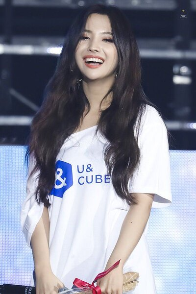
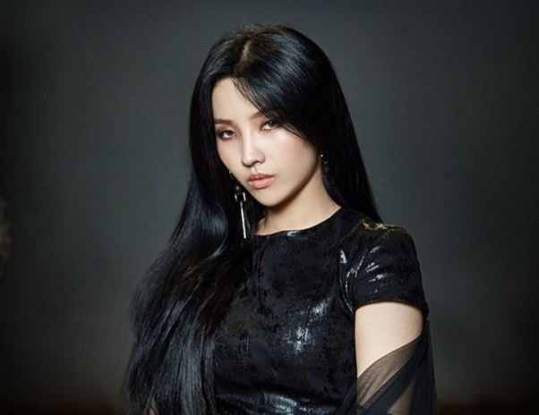

Соён (소연) - южнокорейская певица, рэпер, автор песен и продюсер компании Cube Entertainment. Она является лидером женской группы (G)I-DLE. До своего дебюта в составе (G)I-DLE, Соён являлась сольной исполнительницей с 5 ноября 2017, когда она выпустила сингл "Jelly".
В январе 2016 Соён приняла участие в шоу на выживание Produce 101, где представила Cube Entertainment. Она заняла 20-ое место в финальном эпизоде, не попав в состав I.O.I. В июле она также участвовала в соревновательном шоу Unpretty Rapstar Сезон 3. Она покинула шоу в полуфинале. 29 декабря Соён подписала контракт артиста с Cube Entertainment.
Соён выпустила свой первый сольный сингл "Jelly" 5 ноября 2017.
11 января 2018 Cube Entertainment объявили что Соён совершит свой дебют в качестве лидера группы (G)I-DLE.[4] 12 апреля она была официально объявлена шестой и финальной участницей.[5] Дебют (G)I-DLE состоялся 2 мая с мини-альбомом I Am.
